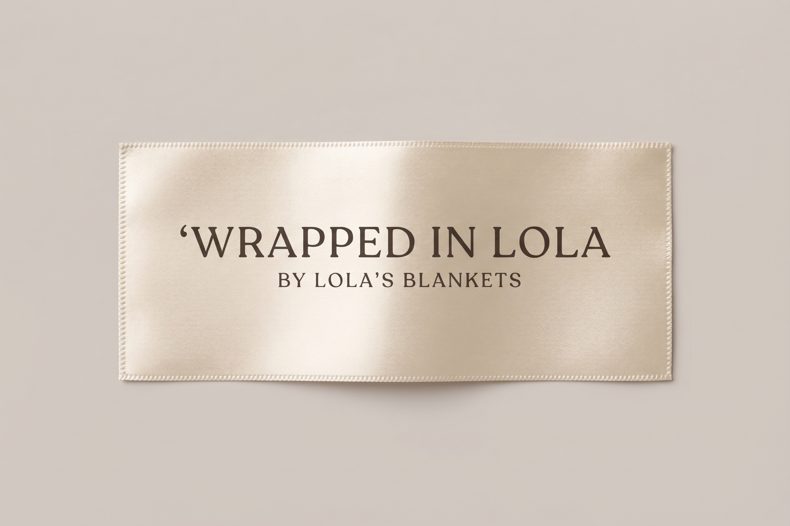

Lola Blankets introduces its inaugural line of scarves for the Winter 2027 collection, designed as a unisex offering for all ages. Crafted with comfort, style, and luxury in mind, these pieces serve as the cornerstone of your winter essentials kit, delivering effortless, grab-and-go fashion. The collection features trend-forward seasonal palettes—including plum, cream, and forest green—alongside distinct patterns such as polka dot, deer print, and cheetah, all rendered in the authentic faux fur aesthetic favored by today's trendsetters. Utilizing signature Lola Blankets fabric to deliver one-of-a-kind items, the brand spearheads an initiative to transition at-home comfort into the urban outdoor environment with this premier scarf release.
